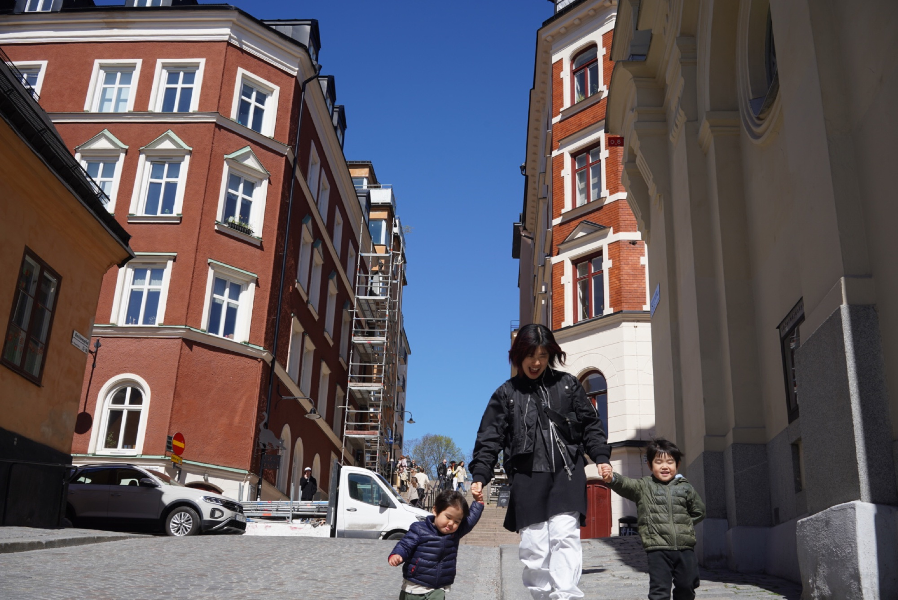
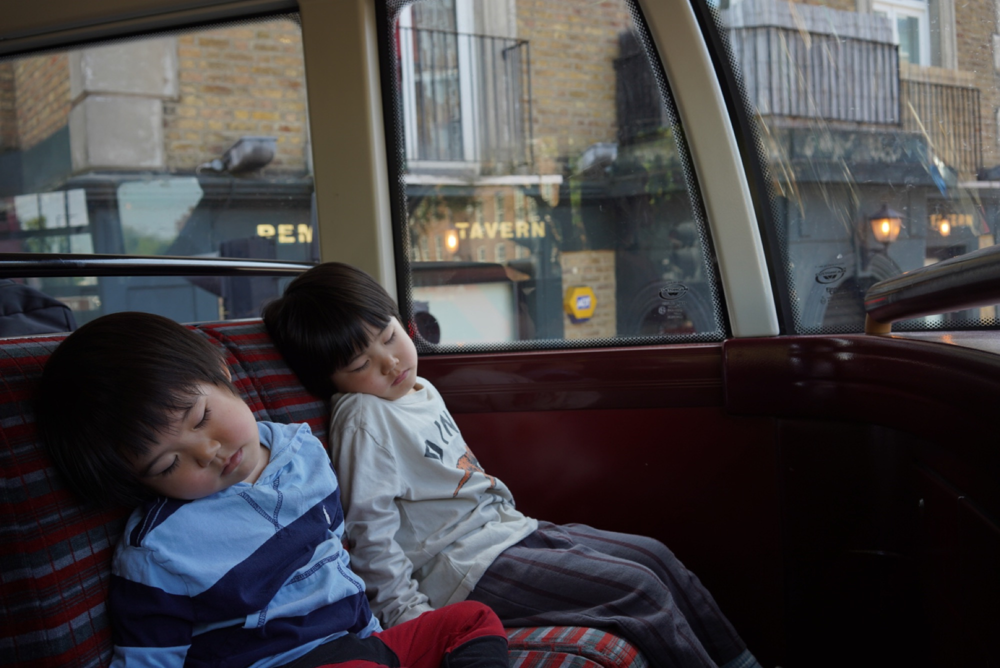
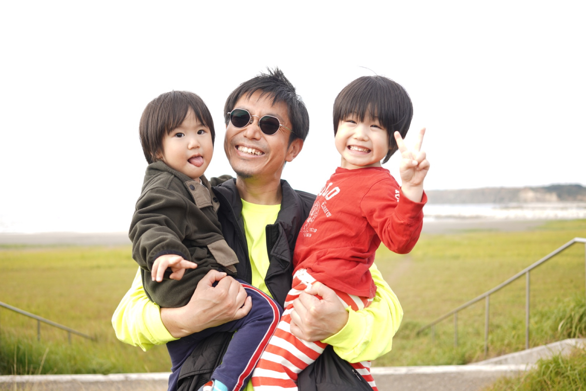
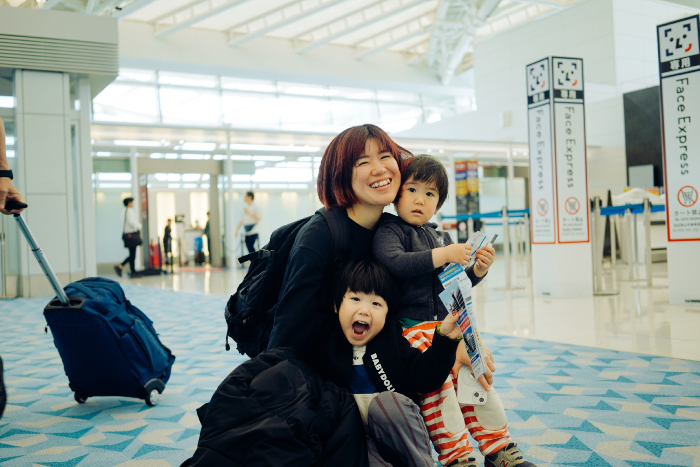
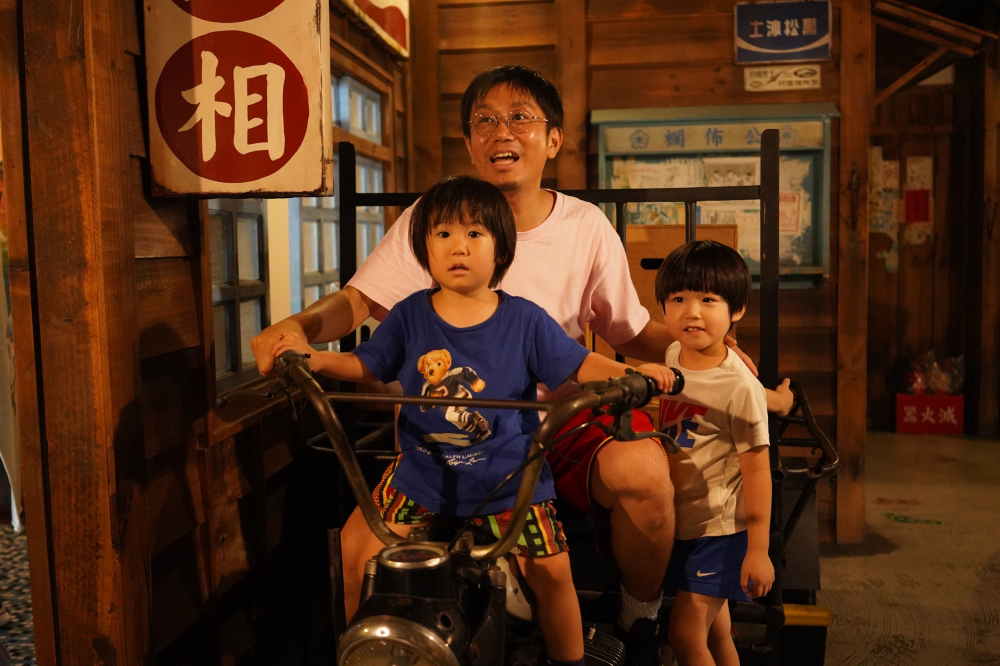
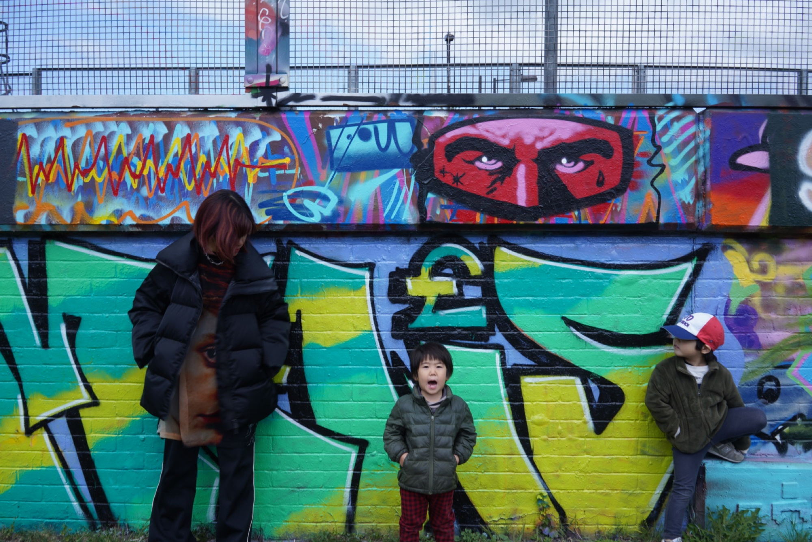
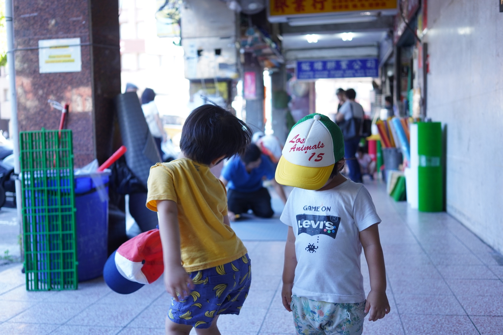
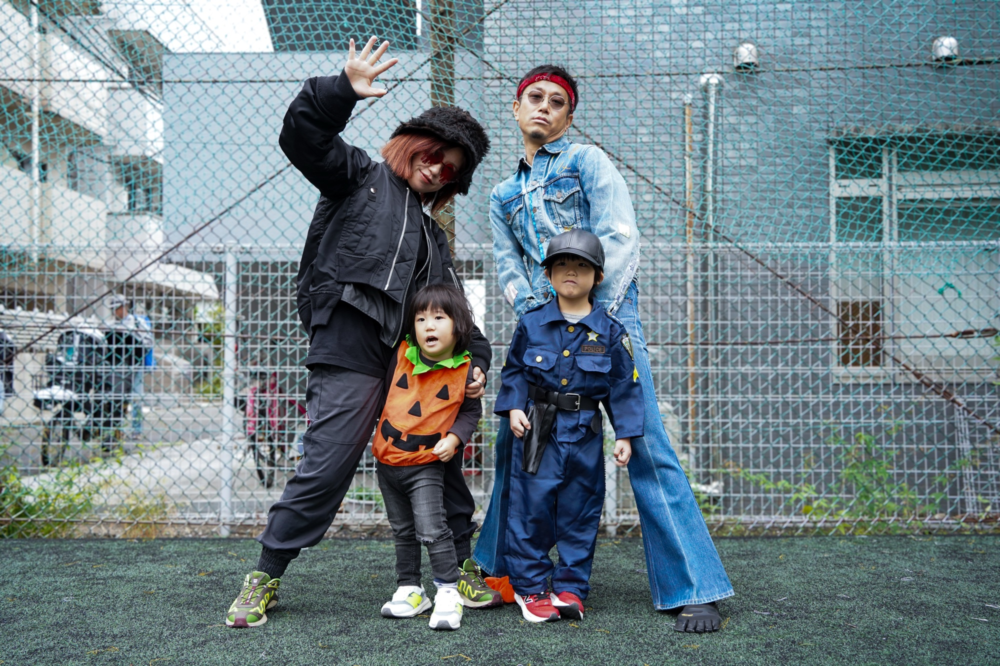
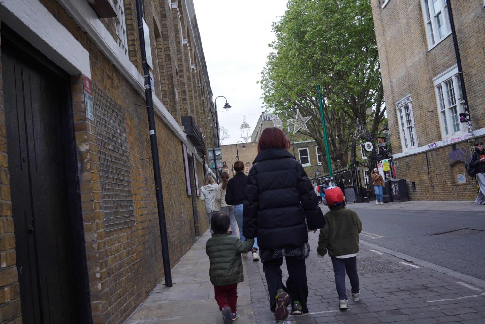
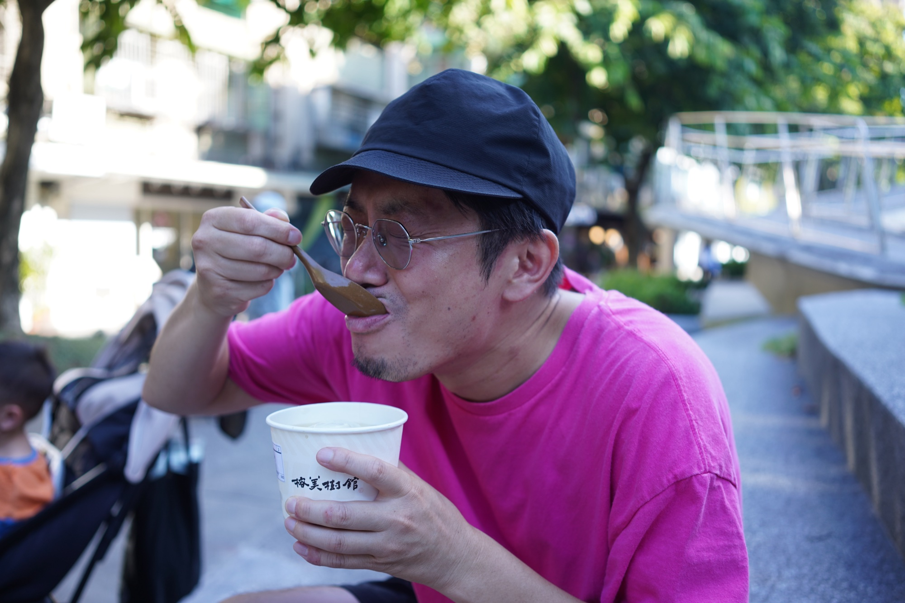

About Wamily
Wamilyをはじめた理由と、これからのこと。
子どもができてから、旅が変わりました。
荷物は増えた。計画は狂う。思い通りにいかないことばかり。
でも、帰るたびに「また行きたい」と思う。

2人が眠ったバスの中で、
書き始めることにした。
01 — きっかけ
子どもたちを連れていくこともあれば、僕と3人で留守番することもあった。どちらにしても、大変だった。でも、その大変さの中で気づいたことがある。
一度しかない人生で、今しかない子どもたちとのこの時間を、もっと思いっきり味わいたい。子どもたちと一緒に、世界をもっと歩きたい。
Wamilyは、そこから始まりました。

02 — 旅のかたち
ハワイで、現地の友人家族が秘境のビーチに連れて行ってくれた。地元の人しか知らない場所。砂浜で鍋を囲んで、相撲をした。言葉の壁なんて関係なく、みんなでゲラゲラ笑った。
帰り道、ふと泣きそうになっていた。友人家族の気持ちが、あまりにも嬉しすぎて。知らない国で、見知らぬ僕たち家族をここまで温かくしてくれることへの感謝が、思いがけず溢れてきた。
大変さの倍、面白い。それが子どもと行く旅です。

空港にて
Taiwan
London
Taiwan
おまけ
子どもを連れていくと、
その街の違う顔が見える気がする。

03 — Wamilyとは
「子連れで海外は大変そう」って、もったいないと思うんです。大変なのは本当。でも、情報があれば踏み出せる。経験した人の声があれば、もっと踏み出せる。
ここに集まった旅の話が、誰かの「行ってみようかな」に変わったら嬉しい。そういう場所を、少しずつみんなで作っていきたいと思っています。

サワディー
Wamilyオーナー
旅好きのパパです。子どもが生まれてから、家族で行く旅が一番好きになりました。困ったこと、驚いたこと、おいしかったもの——全部ここに置いています。まだ途中だけど、そこが好きです。
家族の数だけ、旅がある。
あなたの旅も、誰かの地図になります。
ガイドブックを見る →